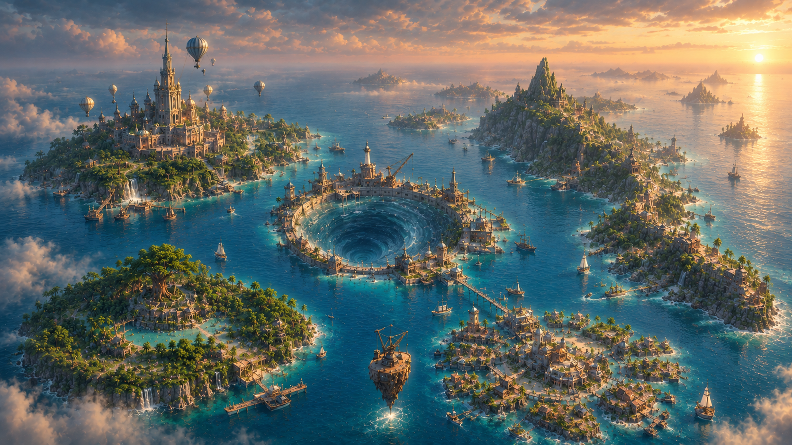

Платформа активна
|
1.2с
🌀
Центральный шторм: Стабилен
Активных жителей: 1

RESEARCH & DISCOVERY
LEONARDO STUDY
Леонардо да Винчи • Междисциплинарные исследования
👆 Нажмите, чтобы открыть окно Леонардо
MARITIME MARKET
SINBAD MARKET
Синдбад-мореход • Торговля контекстом и ресурсами
👆 Нажмите, чтобы открыть рынок

Review→